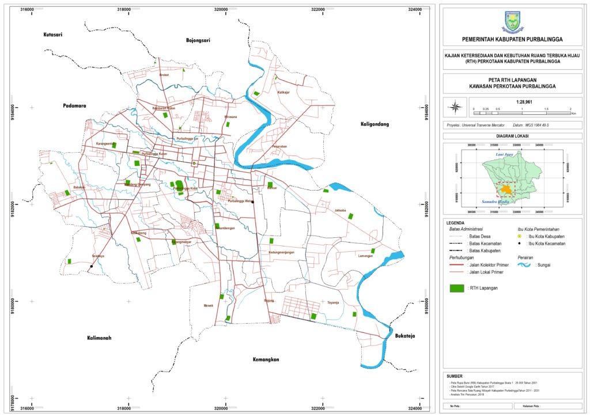

RTH Lapangan
Bentuk lain dari taman kota adalah lapangan dan sarana olah raga. Lapangan Olahraga merupakan salah satu bentuk Ruang Terbuka Hijau yang mudah dikenali, karena merupakan ruang terbuka yang diliputi oleh vegetasi, seperti rumput dan beberapa pohon yang biasanya mengelilinginya sebagai pembatas. Sebagian besar lapangan yang berfungsi sebagai Ruang Terbuka Hijau adalah Lapangan sepak bola yang hampir dimiliki pada tiap kelurahan. RTH lapangan yang ada di perkotaan Purbalingga menyebar di tiap kelurahan/desa. Pada umumnya tanaman penutup tanah berupa rumput yang tumbuh liar dan di sisi lapangan tumbuh pohon peneduh seperti mangga akasia, angsana, flamboyan, sengon, kembang merak. Beberapa RTH berupa lapangan berdasarkan identifikasi tahun 2018 di kawasan Perkotaan Purbalingga adalah sebagai berikut :
| No | Desa | Kecamatan | Luas (Ha) |
|---|---|---|---|
| 1 | Brobot | Bojongsari | 1,09 |
| 2 | Kalikajar | Kaligondang | 0,83 |
| 3 | Lamongan | Kaligondang | 0,69 |
| 4 | Babakan | Kalimanah | 0,87 |
| 5 | Kalikabong | Kalimanah | 0,63 |
| 6 | Karangmanyar | Kalimanah | 0,83 |
| 7 | Mewek | Kalimanah | 1,28 |
| 8 | Selabaya | Kalimanah | 0,69 |
| 9 | Karangsentul | Padamara | 0,88 |
| 10 | Bancar | Purbalingga | 1,06 |
| 11 | Bojong | Purbalingga | 1,23 |
| 12 | Jatisaba | Purbalingga | 1,58 |
| 13 | Kandanggampang | Purbalingga | 0,97 |
| 14 | Kedungmenjangan | Purbalingga | 0,80 |
| 15 | Kembaran Kulon | Purbalingga | 0,78 |
| 16 | Penambongan | Purbalingga | 0,92 |
| 17 | Purbalingga Kidul | Purbalingga | 4,15 |
| 18 | Purbalingga Kulon | Purbalingga | 1,69 |
| 19 | Purbalingga Wetan | Purbalingga | 0,86 |
| 20 | Toyareja | Purbalingga | 0,69 |
| 21 | Wirasana | Purbalingga | 0,75 |
